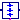

Control components for AC to AC converters
Extends from Modelica.Icons.Package (Icon for standard packages).
| Name | Description |
|---|---|
| VoltageToAngle | Reference voltage to firing angle converter |
|  SoftStartControl | Soft start control |
Reference voltage to firing angle converter
This block calculates firing angle from desired voltage,
choosing either a linear (Lin) relationship or prescribing the first harmonic (H01) or the root mean square (RMS) .
Since calculating the firing angle from both the H01 and the RMS involves a nonlinear equation,
both relationships have been precalculated and are interpolated from a table.
Extends from Modelica.Blocks.Icons.Block (Basic graphical layout of input/output block).
| Name | Description |
|---|---|
| VNominal | Nominal voltage [V] |
| voltage2Angle | Select type of calculation |
| Name | Description |
|---|---|
| vRef | Reference voltage |
| firingAngle | Firing angle [rad] |
Soft start control
This block models the functionality of a soft starter controller, controlling the output vRef in the range [0,1] with respect to nominal voltage.
Boolean input start = true causes the output vRef to be risen according to a ramp: vRef = vStart + (1 - vStart)*(time - t0)/tRampUp.
In case the current exceeds the specified maximum current iMax during the starting ramp, the ramp is stopped.
When the current falls below the lower threshold of current control iMin < iMax, the ramp is continued.
Note: It is recommended to filter the measured current, e.g. using Modelica.Blocks.Continuous.Filter
Boolean input start = false causes the output vRef to be lowered according to a ramp: vRef = -(time - t0)/tRampDown.
Extends from Modelica.Blocks.Icons.Block (Basic graphical layout of input/output block).
| Name | Description |
|---|---|
| tRampUp | Start ramp duration [s] |
| vStart | Start voltage / nominal voltage |
| iMax | Maximum current / nominal current |
| iMin | Lower threshold of current control |
| INominal | Nominal current [A] |
| tRampDown | Stop ramp duration [s] |
| Name | Description |
|---|---|
| iRMS | Measured RMS current [A] |
| vRef | Reference voltage |
| start |